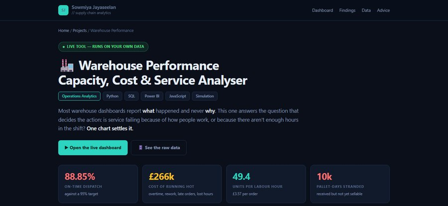
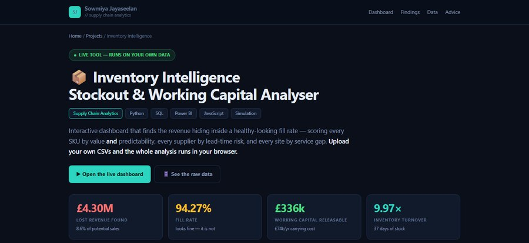
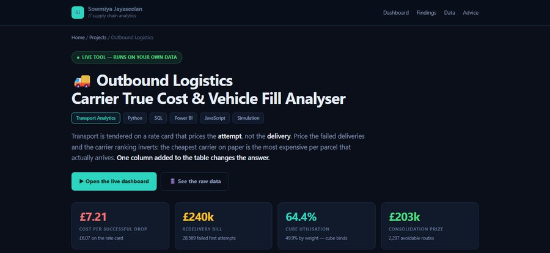
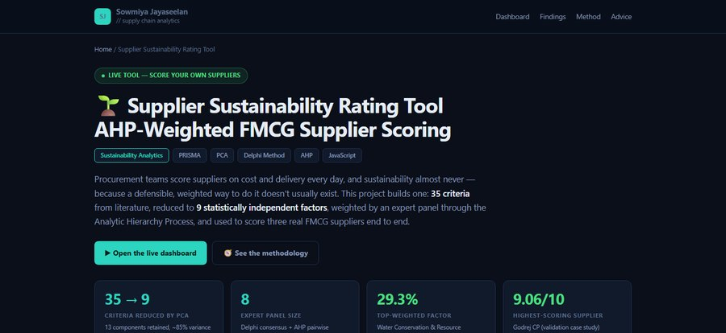

Certified Supply Chain Analyst · Industrial Engineer
Open to Supply Chain Analyst & Placement Roles
I turn supply chain data into decisions that measurably cut cost and improve service - across demand forecasting, inventory optimisation, procurement and FMCG operations.
I'm an MSc Supply Chain & Logistics Management candidate at Coventry University (predicted: First Class with Distinction), with a BEng in Industrial Engineering from the College of Engineering Guindy, Anna University. My work sits at the intersection of operations research and real business impact - demand forecasting, inventory optimisation, S&OP modelling, and end-to-end FMCG supply chain analytics.
I'm proficient in Python (XGBoost, Prophet, ARIMA), Power BI and SAP IBP, and hold a Lean Six Sigma Yellow Belt, the Certified Supply Chain Analyst (CSCA) credential, and a Unilever Supply Chain Data Analyst certification. My hands-on experience spans MOST/SMED process optimisation at Krysalis, production planning and control at Voltech, and high-volume last-mile logistics operations at Royal Mail and Evri.
For my MSc dissertation, I'm engineering an adaptive demand-sensing framework for e-commerce retail - benchmarking XGBoost and Prophet against traditional ARIMA models across volatile, multi-SKU demand environments.

A warehouse "service" problem that everyone assumed was a staffing issue was actually a hidden capacity problem.
Bucketed 2,193 operating days by roster utilisation; modelled labour, overtime and fatigue costs across the full year.

A 94% fill rate looked healthy on the surface - but was quietly hiding significant lost revenue.
ABC-XYZ segmentation combined with supplier lead-time risk scoring across the full SKU base.

The cheapest carrier on the rate card turned out to be the most expensive per successful delivery.
Carrier true-cost ranking combined with vehicle-fill and drop-density economics to re-rank the carrier panel.

Sustainability scoring for FMCG suppliers was subjective, inconsistent, and hard to defend to procurement stakeholders.
Reduced 35 sustainability criteria via PCA to 9 AHP-weighted factors, validated against real FMCG suppliers.
Global Distribution Network design for a sustainable bamboo paper product, plus a 2021–2024 Amazon financial performance analysis.
Strategic change management analysis during a private-equity ownership transition in the aviation security industry.
Group analysis of DHL's global logistics operations and network design.
Procurement & circular-economy diagnosis of Evian's transition to 100% recycled (rPET) packaging.
Changeover-time reduction using Single-Minute Exchange of Die methodology.
Predicted: First Class with Distinction
GPA: 7.6/10
Open to Supply Chain Analyst, Demand Planning and Procurement Analyst roles - graduate and placement positions across the UK.